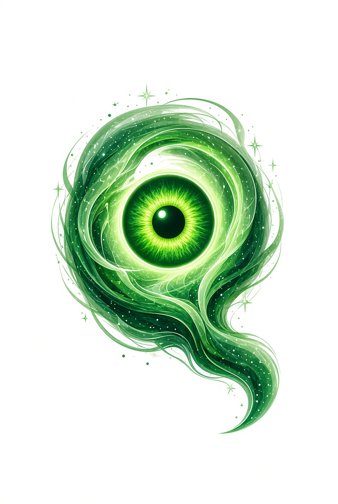

Ottica Integrata Luce e Scienze Quantistiche
Chiedi sempre il livello di evidenza®Andrea Mele, ottico dal 2006. Tre percorsi distinti, tenuti separati per competenza e per registro: prevenzione e terapia della luce, un ambito esplorativo sulla mappa personale, e la fotobiostimolazione come pratica di benessere dichiarata come tale.
Un percorso di astrologia esoterica in letture progressive, le Camere. Non sostituisce percorsi medici o psicologici.
Sezione in arrivoTerapia della luce come supporto al benessere quotidiano. Nessuna promessa clinica, solo pratica dichiarata per quello che è.
Sezione in arrivoValutazione optometrica e prevenzione della salute visiva, con attenzione alla superficie oculare.
Sezione in arrivo